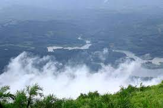
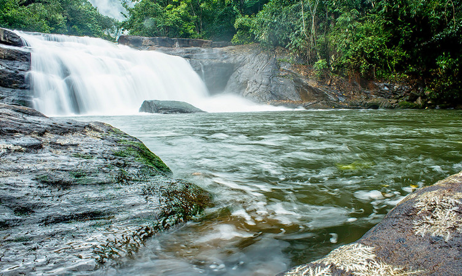
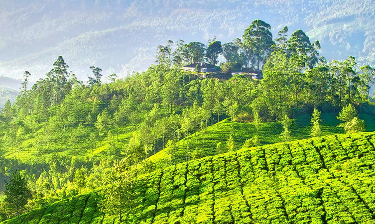

The Spice Garden of Kerala
Idukki district is a densely forested, mountainous region in the south Indian state of Kerala. In the north, Anamudi mountain towers over Eravikulam National Park, where the rare, blue Neelakurinji flower blooms every 12 years. Nearby, Munnar is a hill station known for its sprawling tea plantations and Tea Museum.
Top Destinations

Wildlife Sanctuary
Away from the hustle and bustle of the cities, the Idukki Wildlife is located in the Thodupuzha and Udumpanchola taluks of Idukki at an altitude of 450 – 750 ft above the sea level.

Idukki Arch Dam
The Idukki dam is constructed across the Periyar River, in a valley between the Kuravan and Kurathi hills in Kerala. The awe-inspiring, majestic dam, which stands at 167.68 meters (550 ft), is one of the highest arch dams in Asia. The dam, which is one of the Idukki tourist places, constructed by the Kerala government in 1975 and supports 780 MW hydroelectric power station that draws electricity from this dam.

Ilaveezha Poonchira
Ilaveezha Poonchira, the Shangri-La of Kerala, situated in Melukavu village in Kottayam district is one of the places to visit in Idukki. Located at the foothills of the 3 floral hillocks – Mankunnu, Kudayathur, and Thonippara Hills at Kanjar, the bewitching valley is spread across thousands of acres.

Keezharkuthu Falls
The cascading waters from a height of 1500 meters amidst the hills enveloped in lush greenery, adorns the skies with rainbows that takes the visitors’ breath away. A favorable hunting ground for photographers, the Keezharkuthu falls also referred to as rainbow falls immerse the visitors in an inexplicable experience.

Hill View Park
Hill View Park, one of the Idukki tourist places, located at a distance of 2 km from Idukki Bus stand, is a magnificent and well-managed park. The park, stretching over 8 acres enthralls the visitors with hundreds of varieties of crotons, flowers, medicinal plants, and other woods.

Valara Waterfalls
Valara Waterfalls, is one of the places to visit in Idukki, is located on Munnar-Kochi Highway. The gushing waters from a series of waterfalls, falling from an altitude of 1000 meters provide an alluring view.Nestled in the verdant vegetation featuring various types of woods and multitude of the animal kingdom, it is an ideal place for nature lovers and bird watchers.

Vandanmedu
Vandanmedu is located 25 km north of Kumily, on the Thekkady-Munnar Highway. The place is famous for rich spices like cardamom and it is said to be the biggest auction centers for Cardamom. The visitors traversing the plantations can enjoy the aroma of cardamom wafting through the air.

Nadukani Pavilion
Nadukani, one of the Idukki tourist places, is situated between Thodupuzha and Idukki in the vicinity of Kulamavu. Nadukani Pavilion, a 2-storey building constructed and managed by the State Electricity Board, atop a hill is encompassed by the vast stretches of hayfields flanked by gargantuan rocks.

Thommankuthu Waterfalls
Thommankuthu Waterfalls is a series of 12 falls or kuthus (locally known) spread over an area of 5 kms and fall from a height of 40 meters. The 12 falls that vary in height and pass through the lush evergreen forests, presents a remarkable sight.

Pothamedu Plantations
Pothamedu Plantations, one of the places to visit in Idukki, bedazzles the tourists with its lush greenery. The lush green beds of coffee, the groomed tea gardens, and the wood-shaded cardamom plantations imprint an unforgettable picture in the minds of the visitors.